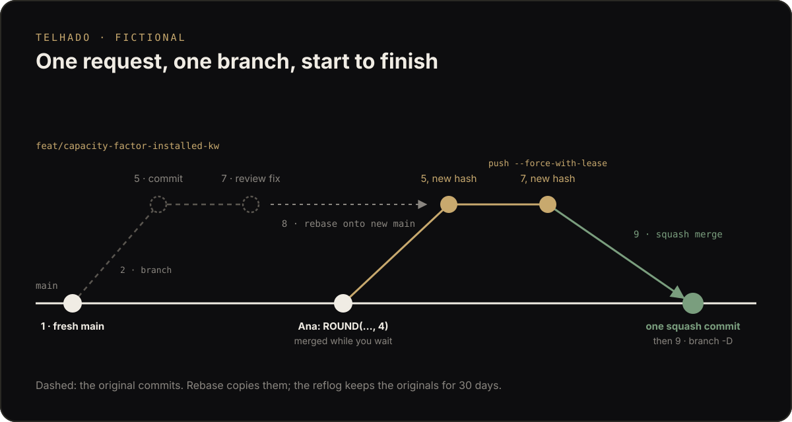
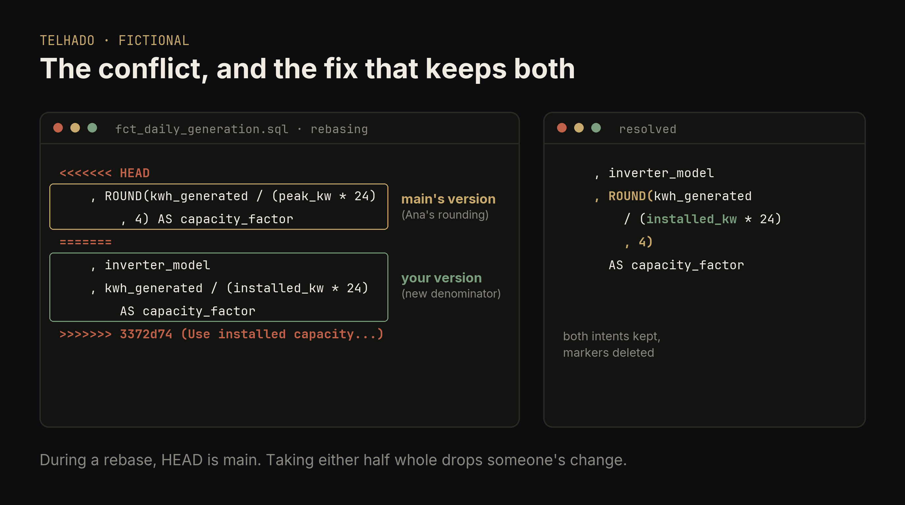
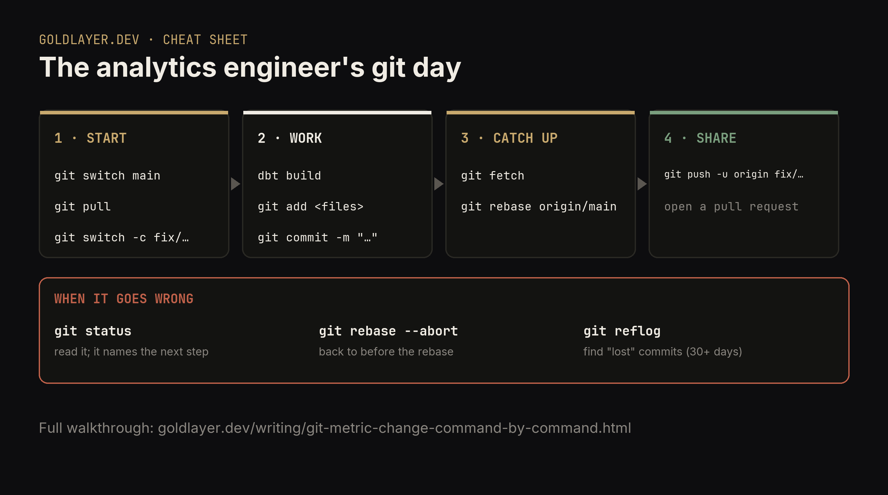

Changing how a metric is calculated takes one line of SQL and about nine git steps. The SQL is rarely the part that goes wrong.
What goes wrong is a stale main, a git add . that sweeps in a CSV, or a conflict resolved by picking a side. So here is one ordinary request, start to finish, with the check I'd run at every step.
- One metric request touches git nine times before it ships.
- Each step has a check that takes seconds and gets skipped.
- The conflict step is where a metric quietly gets the wrong formula.
Part 2 of Git for analytics engineers: Part 1: Branch or not to branch · Part 2: One metric change, command by command (this post)
Telhado is the same fictional rooftop-solar co-op in Porto. I ran every git command below on git 2.54 in a scratch repository, including the conflict and the squash merge, and copied the outputs from that run. If origin/main or rebase feel fuzzy, Part 1 explains them in one picture.
The request
Telhado's operations lead writes on a Tuesday morning: capacity factor should divide by each site's installed capacity, not its peak output, and could the daily table show the inverter model too? That's one model, one metric and one new column.
Think of it as a single parcel. You pack it on your own table (a branch), a colleague checks it (review), and it joins the shared shelf (main) only when it's right.

Before you write any SQL
1. Start from a fresh main.
git switch main
git pull
You want Already up to date. or a fast-forward. If pull refuses with "divergent branches", your local main has commits that never went through review. Move them onto a branch with git switch -c <name>, then put main back with git switch main and git reset --hard origin/main. Run that reset only once the branch holds your commits.
2. One branch for the request.
git switch -c feat/capacity-factor-installed-kw
Both changes touch the same model and ship together, so they share a branch. If the same message also asks you to rename a dashboard field, that's a second branch.
3. Change the model, then build it with everything downstream.
dbt build --select fct_daily_generation+
The + builds and tests every model that depends on this one. A metric change rarely breaks the model you edited. It breaks the reporting model two steps downstream.
4. Read your own diff before git does anything with it.
git status
git diff
Only the files you meant to change should appear. If target/, logs/ or a profiles.yml show up, they belong in .gitignore, not in a commit.
Getting it reviewed
5. Commit files by name, with a message about the data.
git add models/marts/fct_daily_generation.sql
git commit -m "Use installed capacity in capacity_factor"
git add . is how a stray CSV ends up in history forever. "fix" and "wip" tell a reviewer nothing; the message should say what changes in the numbers.
6. Push and open the pull request.
git push -u origin feat/capacity-factor-installed-kw
The -u links your branch to its copy on GitHub, so later a plain git push knows where to go. In the pull request, say how the numbers moved: which sites' capacity factor went up or down, and roughly by how much. Reviewers can read SQL. They can't guess what it does to last month's report.
7. Answer review on the same branch.
The reviewer asks you to document the new column:
git add models/marts/schema.yml
git commit -m "Document inverter_model"
git push
No new branch and no new pull request. The open one picks up the commit.
When main moves under you
8. Fetch, rebase, and resolve the conflict by keeping both intents.
Meanwhile Ana merged a change that rounds capacity_factor to four decimals. It's the same line you changed.
git fetch
git rebase origin/main
In my run, the rebase stopped with CONFLICT (content): Merge conflict in models/marts/fct_daily_generation.sql, and the file held both versions.

During a rebase the top half, marked HEAD, is main's version and the bottom half is yours. Most people expect the opposite. Don't pick a side: keep Ana's rounding and your denominator, delete the marker lines, then finish the rebase.
git add models/marts/fct_daily_generation.sql
git rebase --continue
dbt build --select fct_daily_generation+
git push --force-with-lease
Build again before pushing, because the combined line is new code nobody has run. If --continue opens an editor for the commit message, save and close it.
A rebase conflict that "resolves" by taking one half whole is the quiet way a metric ships with the wrong formula. The build passes, the tests pass, and either the rounding or the new denominator is gone.
Finishing, and getting out of trouble
9. Clean up after the merge.
git switch main
git pull
git branch -d feat/capacity-factor-installed-kw
If your team squash-merges on GitHub, -d refuses with "not fully merged". A squash merge lands your work on main as one new commit, so git can't find your branch's commits inside main. Once the pull request shows Merged, git branch -D is safe.
When something goes sideways, three commands get you out of almost everything:
git statusfirst, every time. It names the state you're in and usually prints the next command.git rebase --abortwhen a rebase hits conflicts you don't want to resolve now. You land back where you started.git reflogwhen you think you lost work. It lists every place your branch has pointed, including the pre-rebase commits. Git keeps those entries for 30 days by default, andgit switch -c rescue <hash>brings one back as a new branch.

Try this at work
Open your last merged pull request and walk it against the nine steps. Which did you skip? If I had to pick two to fix first, it's step 3 (build downstream, not just the model) and the rebuild in step 8, because both catch broken numbers before a reviewer has to.
Takeaways
- Start every request from a freshly pulled main — if pull refuses, you committed to main; move the work to a branch first.
- Build downstream, not just the model — the
+selector catches the report that actually breaks. - Commit files by name —
git add .is howtarget/and stray CSVs get into history. - Review fixes go on the same branch — the open pull request updates itself.
- In a rebase conflict, HEAD is main — keep both intents, then rebuild before
--force-with-lease. - Squash merges confuse
git branch -d— use-Donce the pull request shows Merged.
Sources and version notes
Checked on 20 November 2026. I ran every git command on git 2.54.0; the documentation below is current to git 2.56.1. The dbt build commands were not part of that run.
- git-rebase — conflicts,
--continueand--abort. - git-push — what
--force-with-leasechecks before overwriting. - git-branch — when
-drefuses and what-Ddoes. - git-reflog and git-config —
gc.reflogExpireUnreachabledefaults to 30 days. - About merge methods on GitHub — squash merging.
- Graph operators — dbt’s
+selector.
Which of the nine steps does your team skip most often?